Heavenly Bodies
The ancient Greeks are widely celebrated for their alluring art.
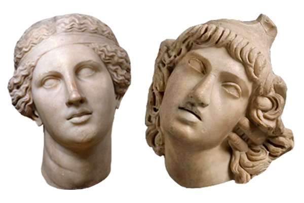
They were significantly involved with the creation of "heavenly bodies," in which they depicted mythological figures, legendary heroes, gods, and goddesses in their sculpture-making. More importantly, the Greeks believed that mortal men and women were made in the likeness of the gods.

Style in ancient Greek sculpture changed immensely over time, spanning three main periods: Archaic, Classical, and Hellenistic.
Archaic Greece
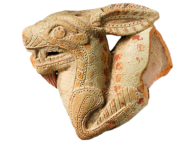
As one of the earliest periods in ancient Greek art, the Archaic period ushered a naturalistic style, especially in depictions of the human form.
Influences from Egypt and the Near East are seen in motifs added to vases and figurines, while the dress, hair, and facial construction of sculptures were obviously reminiscent of Egyptian style.
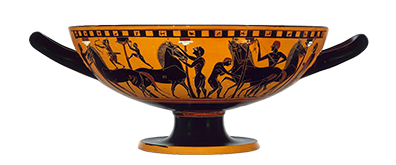
An effort to achieve likeness in rendering the human figure is apparent in the freestanding votive sculptures of young men, or kouroi.
Click on an icon to view statue details and their great Egyptian likeness.
Classical Greece
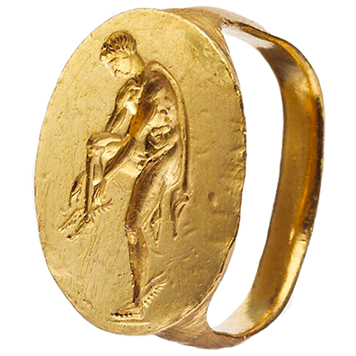
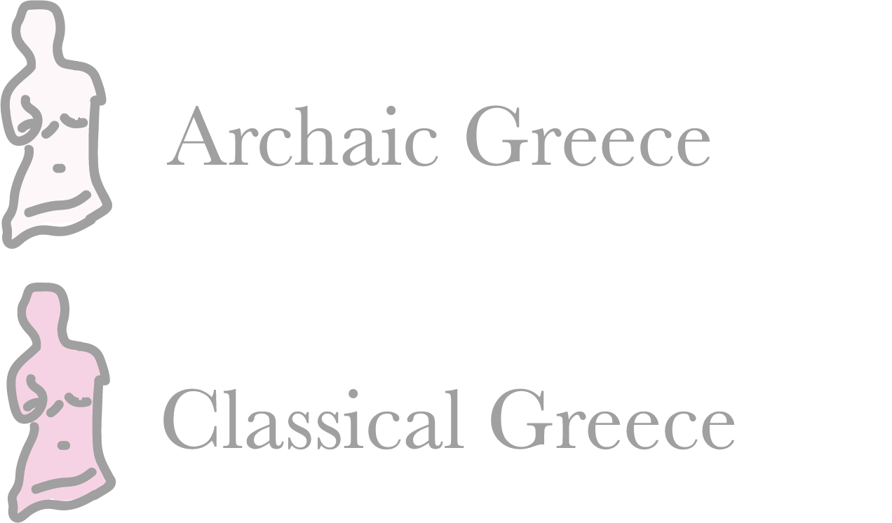
Ancient Greek art styles quickly began changing after victory in the Persian wars, coining the Classical period.
Traditionally, this period is considered the peak of artistic perfection.
As life became easier and more opulent, Greek sculpture became so as well.
Naturalism in art also reached its epoch, and sculpture was meant to replicate how humans really looked.
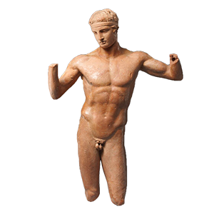
Nudity became increasingly common in this art period as well - the human body was considered a thing of great beauty and admiration.
The city of Athens dominated the burgeoning cultural scene.
The building of the Parthenon and its sculptures paved the way for unprecedented artistic achievements.
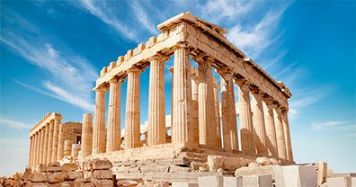
Hellenistic Greece
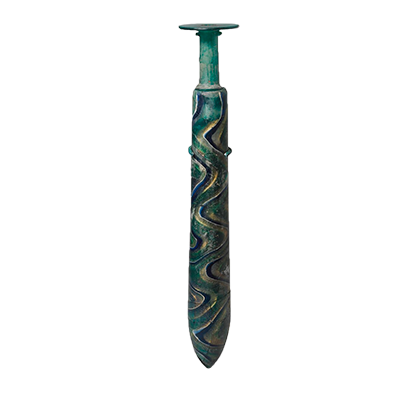
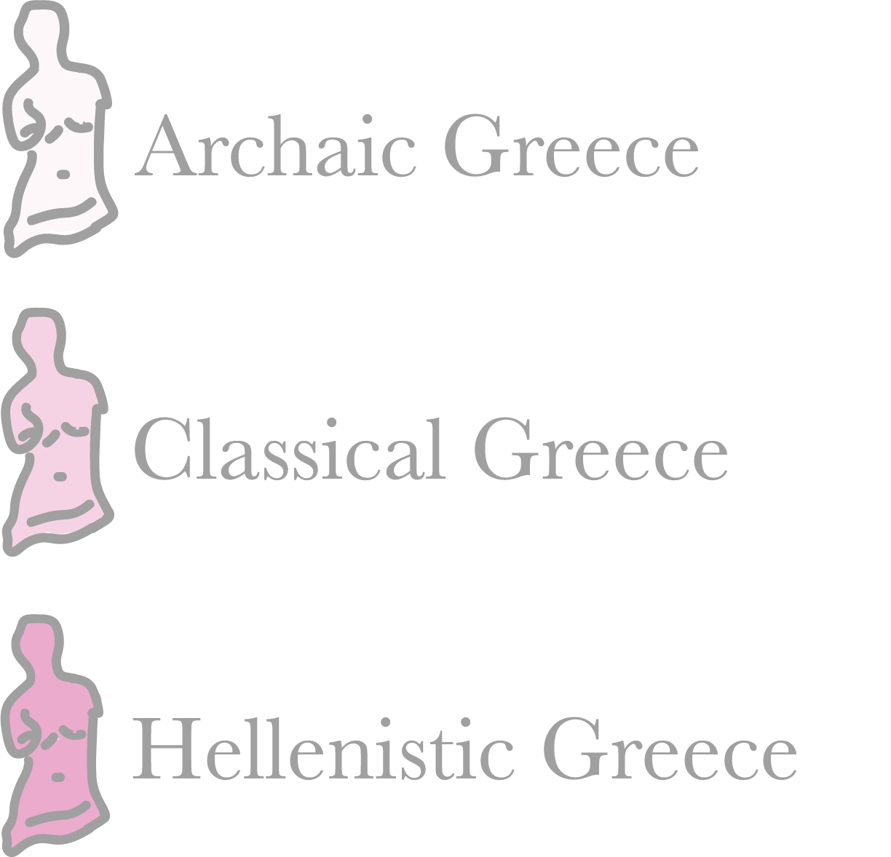
The Greek world rose anew admist the vivacity of Alexandar the Great's conquests, which lent to a new, prosperous social structure.
This contact with new regions disseminated Greek culture and its arts, and exposed Greek artistic styles to a host of foreign influences.
Hellenistic sculpture is defined by its intense emotional appeal and growing emphasis on individual character.
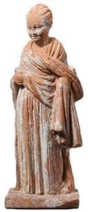
These sculptures are but a sliver of the abundance the Greeks created.
This map still shows the huge breadth of the once mighty Greek empire. Their art was just as pervasive.
The Romans typically melted down bronze originals to reuse the metal.
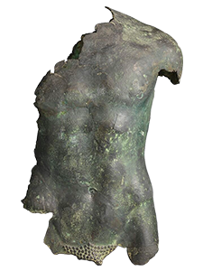
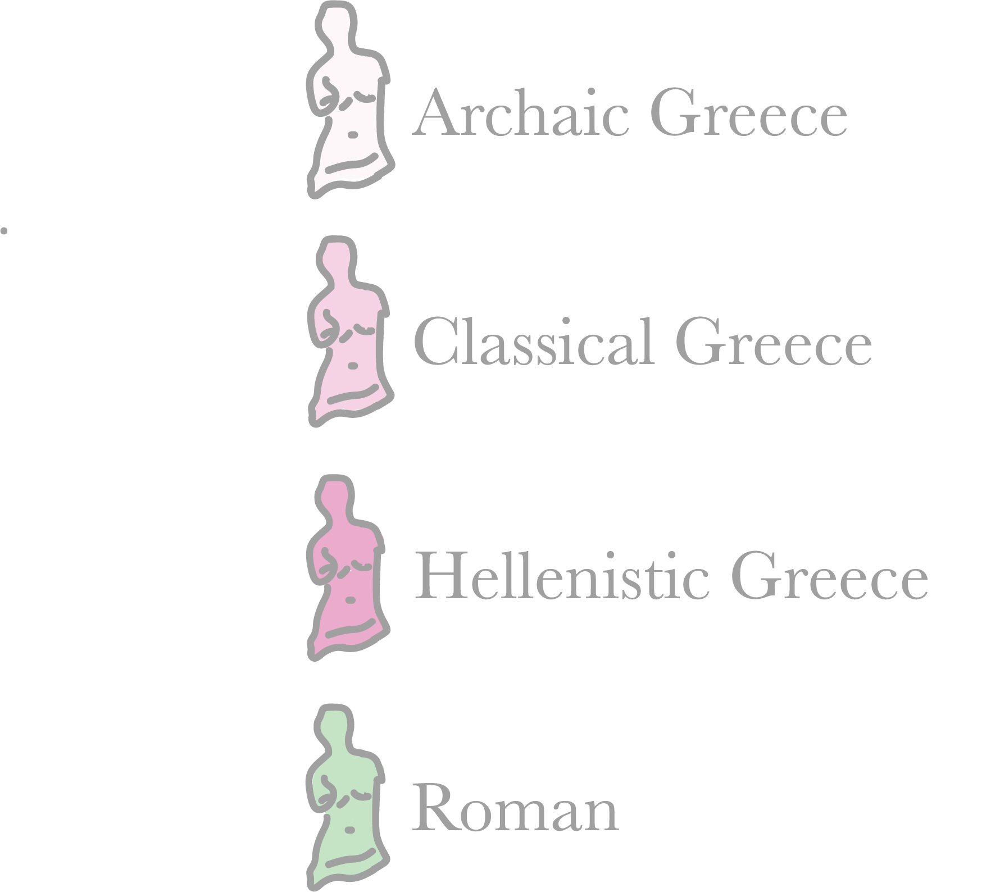
Because the originals were destroyed, the origins of most of the Roman recreations are unknown - Roman replicas have been found primarily near Rome.
Venus de Milo was made and found on the Greek island of Milos.
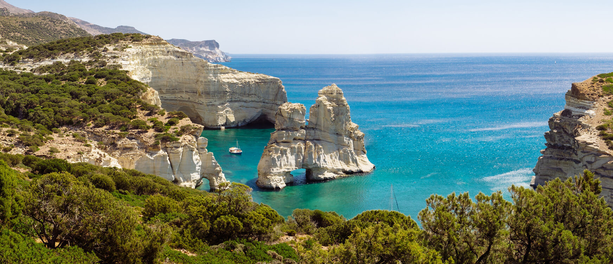
Milos island's pristine blue waters
In ancient Greece, Milos island was esteemed for its mineral wealth. It faced ever-evolving rule, destruction, and freedom. In more peaceful periods, the arts flourished, bringing about the creation of such statues as Venus de Milo.
Venus de Milo was found here in 1820 and immediately handed to Louis XVIII. He presented Venus to the Louvre in 1821, where she remains today.
Louis XVIII, painted in Versailles
There's a current, passionate campaign to return Venus to her homeland.
As previously mentioned, the Louvre has held Venus hostage since she was discovered.
She's not missing her arms - she's missing her home.
But Venus isn't the only woman without a home.
Many museums today possess statues which belong to a Greek culture outside their boundaries.
Click a museum icon to see what statues they hold.
Only a fragment of these Greek masterpieces remain un-orphaned.
These sculptures, particularly those made for the Acropolis of Athens, are showcased in museums by their Greek mother today.
Similar to Venus de Milo, upon discovery, the Parthenon Marbles were shipped to the British Museum.
The British Museum has held these grandeur marbles prisoner for over 200 years.
The Greeks are vehemently distraught over these losses - controversy over the marbles has existed since they were unveiled from the Parthenon ruins.
Because of this infringement, the Acropolis Museum is both a museum and a cemetery of fragments.

Acropolis Museum, showing missing statue on middle left
The top floor of the museum is sorrowful, as the setting and descriptive plaques invite visitors to mourn the marble absence as a death of what once was precious and hallowed.
The contrast between the stark, white plaster replicas and the ancient, honey-colored stone of the originals serves a specific purpose to bring witness to the casualties.
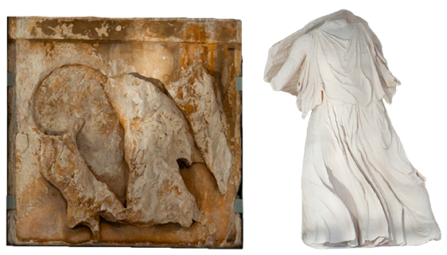
Original stone and plaster replicas of Parthenon Marbles
The British Museum hasn't solely taken from the Greek.
The Rosetta Stone, one of the world's most powerful artifacts, was seized by the British Museum. The inscriptions upon the stone were a breakthrough in deciphering Egyptian hieroglyphics.
Today, Egyptians have called for the return of the stone, declaring that it constitutes as a spoil of war. The stone is one of more than 100,000 Egyptian relics in the British Museum's clutches.
The British Museum has also seized two Moai statues from Rapa Nui (Easter Island), where they've stood solemnly for over 150 years.
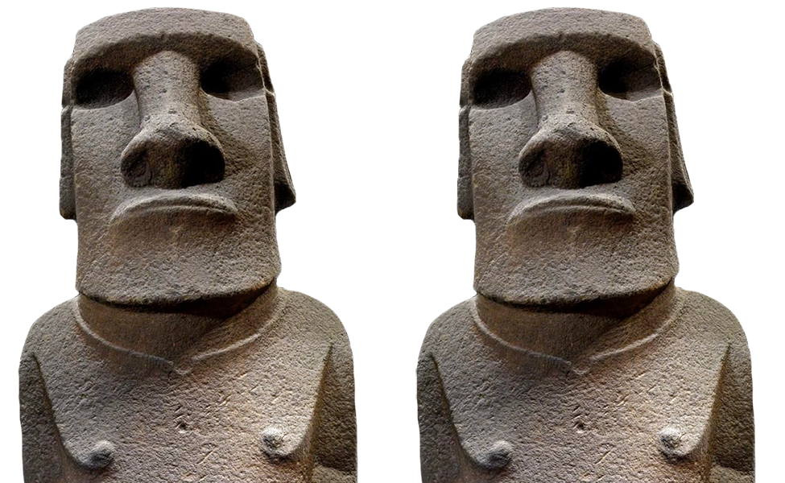
Two moai statues
"This is no rock. It embodies the spirit of an
ancestor, almost like a grandfather."
- Carlos Edmunds, president of the Council of Elders
Three cultures have been robbed by the taking of these objects. They are results of unfortunate colonialist agendas that have constantly permeated history.
One can only hope for one last rotation of these heavenly bodies to their wistful beginnings with their patient ancestors.

Created by Sophie Michalski and Claire Harned
Sources
Ancient Greek sculptures by name, Wikimedia Commons
Ancient Greek, Art Institute of Chicago
Greek Collection, University of Saskatchewan
Art of the Hellenistic Age and the Hellenistic Tradition, The Met
Ideal Greek Beauty, The Louvre
History of Milos Island
Take Aphrodite Home
The Fate of the Parthenon Marbles Rests in Secret Talks, The New York Times
Elgin Marbles, Brittanica
Greece Unveils Museum Meant For 'Stolen' Sculptures, NPR
Egyptians call on British Museum to return the Rosetta stone, PBS
Easter Island demands British Museum return 'moai' statue taken 150 years ago, The Independent
Rapa Nui National Park, UNESCO
Greek Art in the Archaic Period, The Met
The Art of Classical Greece, The Met
Hellenistic and Roman Cyprus, The Met
The Technique of Bronze Statuary in Ancient Greece
Venus de Milo, Wikipedia
Venus de Milo, Royal Academy
Louis XVIII, Château de Versailles
Should the Parthenon Marbles be Returned to Greece?, The New Yorker